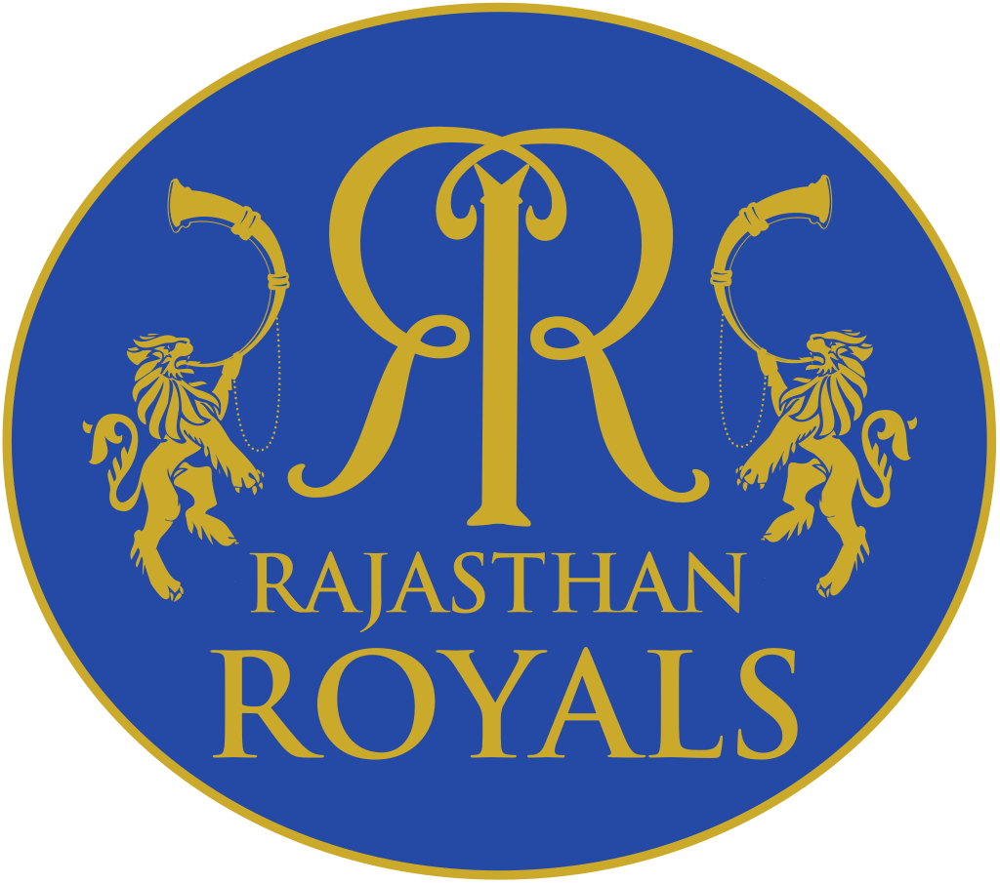

|  | |
| Captain | Sanju Samson |
|---|---|
| Coach | Trevor Penney |
| Ground | Sawai Mansingh Stadium |
The Rajasthan Royals (often abbreviated as RR) are a franchise cricket team based in Jaipur, Rajasthan, that plays in the Indian Premier League (IPL).[1] Founded in 2008 as one of the initial eight IPL franchises, the team is based at the Sawai Mansingh Stadium in Jaipur.[2][3] The Royals are known to unearth obscure, high potential talent,[4][5][6] as well as for their involvement in a number of controversies and scandals